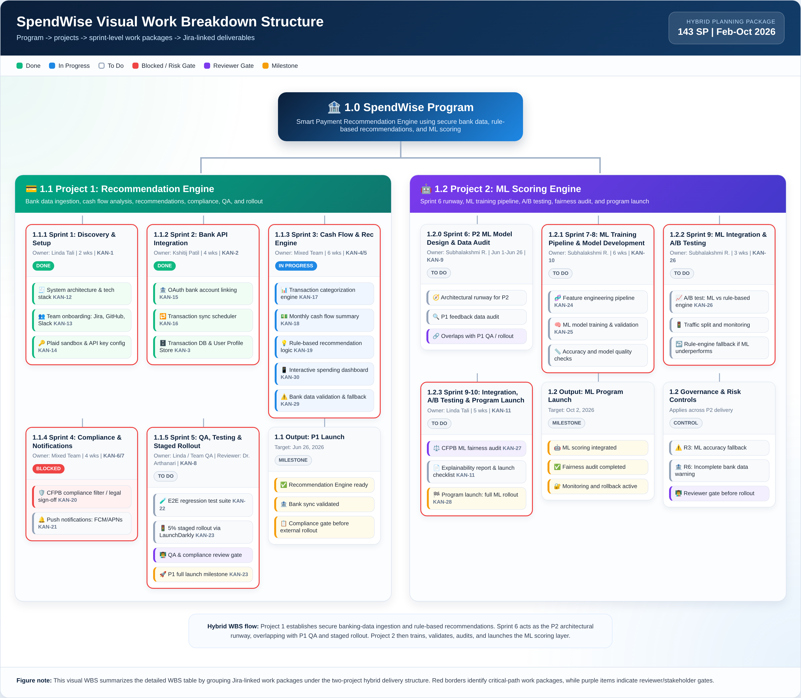
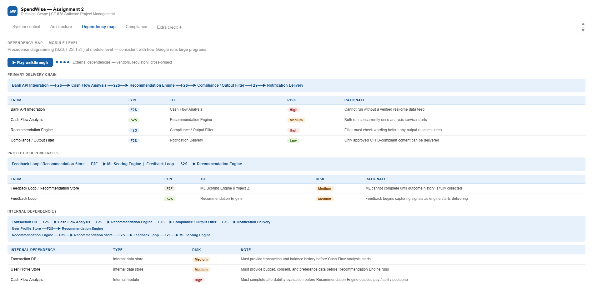

The SpendWise MVP, vibecoded solo in Lovable: checking balance, safe-to-spend, and top spending categories at a glance.
🎯 The Setup: A Real Program, Not a Toy Project
SpendWise is a Smart Payment Recommendation Engine for a fictional fintech client: it analyzes a user's cash flow and recommends whether to pay a bill in full, split it, or postpone it. Straightforward enough as a concept. The catch is that it was scoped, budgeted, and run as an actual two-project program, using the SAFe Architectural Runway pattern: P1, a rule-based recommendation engine (90 story points), and P2, an ML scoring engine (53 story points) that overlaps P1's tail end by a month. 143 story points total, one program.
As Product Owner and Program Manager, I owned the business case, the budget (a $377K cost baseline with 10% contingency, tracked through EVM), the risk register, the sprint cadence, and a five-person cross-functional team: a frontend engineer, a data engineer, a backend engineer/Scrum Master, and a data scientist.
Running a program like that well means two things have to happen at once: the team needs to see progress fast, and the PM needs visibility into the board without becoming a bottleneck. That's where the two pieces below came in.
Piece 1: Vibecoding the MVP in Lovable
I'm not a developer. I didn't need to be. I built the working SpendWise MVP myself, solo, using Lovable, a no-code AI app builder, to turn the product requirements straight into a functioning interactive prototype.
Why this mattered for the program, not just the demo:
- It gave the team and stakeholders something to click through in week one instead of waiting on wireframes or a dev sprint. The MVP showcased the payment recommendation logic (pay in full / split / postpone) as a real, navigable interface.
- It let me validate the UX and the business logic myself before a single engineering hour was spent on the front end, which kept the rule-based engine (P1) scoped tightly instead of getting redesigned mid-sprint.
- It's a live artifact, not a mockup: wise-spend-advice.lovable.app
This is the skill I want a hiring manager to see directly: a PM who can go from requirements to a working prototype without waiting in an engineering queue, then hand that prototype to the team as a shared reference point instead of a slide deck.
Piece 2: Connecting Claude to Jira Over MCP
The second piece was wiring Claude directly into our Jira board (project KAN, 30+ tickets across three sprints) using the Model Context Protocol, so I could ask Claude to check sprint status, pull blocked tickets, and reason about risk exposure without opening Jira myself.
What this actually replaced:
- Manual sprint status checks and stand-up prep. Instead of scrolling the board before every check-in, I could ask directly for what changed, what's blocked, and what's at risk.
- Static burndown snapshots. Claude could pull live ticket state and reason about velocity against our 35 SP/sprint baseline in the moment, not from a chart that was already a day old.
- Blind spots on critical-path blockers. One example: a compliance ticket (CFPB filter logic) sat blocked pending legal sign-off. Because Claude had live board access, that blocker was visible and flagged as a program risk immediately, instead of surfacing at the next status meeting.
Why this is the more transferable skill: vibecoding gets you a fast prototype. An AI assistant with live, governed access to your actual PM tooling changes how you run the program day to day; less time spent translating between tools, more time spent on the judgment calls that actually need a human. That's the "so what" for anyone hiring a technical PM in 2026: can you make AI assistants part of your operating rhythm, not just your resume.
Program Management Underneath It All
The vibecoded MVP and the MCP-connected board are the two most demo-able pieces, but they sat on top of a full program management discipline:
- Risk register (R1–R6): including R6, incomplete or delayed bank data, tracked from Assignment 3 through execution
- EVM tracking: Planned Value, Earned Value, and Actual Cost tracked against a $377,245 budget baseline
- Regulatory framing: CFPB guidance, the Investment Advisers Act of 1940, and GLBA data privacy built into the requirements from day one, not bolted on later
- MOV targets: churn reduction from 8% to 4%, premium conversion from 12% to 20%, defined up front as the measures of program success
The Visual Work Breakdown Structure
Sprint plans in a spreadsheet are easy to write and hard to actually use in a stand-up. I built a visual WBS that maps the full program hierarchy, program → two projects → sprint-level work packages → individual Jira tickets, color-coded by status (done, in progress, blocked, reviewer gate, milestone), with every card traceable back to a real KAN ticket number.

Program → projects → sprint work packages → Jira tickets, one map. Red borders mark critical-path items, purple marks reviewer gates.
The blocked compliance ticket (KAN-20) shows up right where it actually sits in the delivery chain, not buried in a separate risk log. That's the point: the team can see a blocker's downstream impact at a glance instead of cross-referencing three documents.
A Dedicated Repo for the Technical Scope
The program materials, this case study, the MVP link, the WBS, live in my main portfolio site. The technical scope work, system context, architecture, module-level dependency mapping, and compliance chain, lives in its own repository: github.com/lindatali/spendwise-a2, deployed separately via GitHub Pages at talindagroup.com/spendwise-a2.

Module-level dependency mapping (finish-to-start, start-to-start, finish-to-finish) with a risk rating on every link in the chain, from the separately hosted technical scope site.
Splitting it out wasn't arbitrary. The interactive dependency map, system context, and architecture views are a different artifact for a different audience than the program case study, so they got their own repo, their own deploy, and their own URL instead of getting crammed into one monolith. It's a small thing, but it's the same instinct that keeps a real engineering org's repos from turning into a single unmanageable folder.
Skills Demonstrated
- AI-Assisted Vibecoding: Requirements → working prototype, no engineering handoff required
- Agentic Workflow Design: Claude + MCP wired into live PM tooling for real-time program visibility
- Two-Project Program Management: SAFe Architectural Runway pattern, overlapping timelines, shared budget
- Agile/Scrum Execution: Sprint planning, velocity tracking, burndown analysis across a 5-person team
- Budget & EVM: Cost baseline, contingency planning, PV/EV/AC tracking
- Risk Management: Structured risk register with live status tracking
- Regulatory & Compliance Framing: CFPB, GLBA, and fintech-specific compliance built into scope
- Multi-Repo Git Workflow: Separate repos and independent GitHub Pages deployments for the program case study vs. the technical scope deep-dive
Academic Context
Course: SE 638, Software Project Management
Program: MS in Business Information Technology, Drexel University
Instructor: Dr. Ram Arthanari
Focus: Program-level Agile execution, AI-assisted project management tooling
This project is a graduate program management course deliverable. The MVP and Jira board reflect a real working prototype and a live sprint board, not a production fintech launch, run the way a real cross-functional program would be.